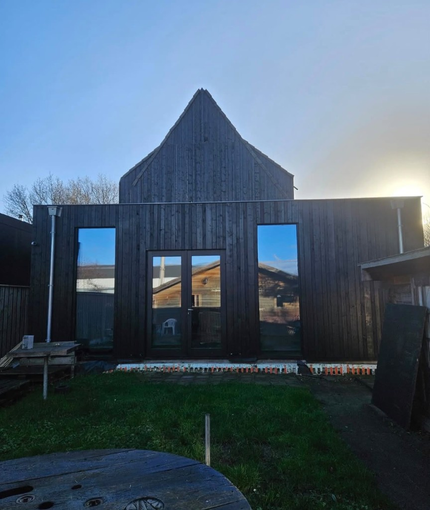

Kort antwoord: praktisch, maar niet zorgeloos
Een aanbouw met plat dak past vaak goed bij een woonkamer of keuken aan de achterzijde. Je verliest binnen geen ruimte aan schuine kanten en een lichtstraat of daklicht kan daglicht terugbrengen in het bestaande huis. Ook blijft het bouwvolume meestal rustiger dan bij een hoge kap.
“Plat” betekent niet waterpas. Het dak heeft afschot nodig naar een afvoer, met een veilige noodafvoer voor uitzonderlijke neerslag. Aansluitingen bij gevel, dakrand en doorvoeren moeten als één systeem zijn ontworpen. Juist die details bepalen hoe onderhoudsarm het dak later is.

Voordelen en nadelen naast elkaar
- Plus: volledige stahoogte, een rustige vorm en vrijheid voor daklicht of een groendak.
- Plus: de aansluiting op een bestaande achtergevel is vaak compact uit te werken.
- Min: afvoer, dakranden en doorvoeren vragen periodieke controle; bladeren bij de afvoer zijn geen detail.
- Min: een lichtstraat, groendak of later dakterras verandert belasting en detaillering. Reken dat niet achteraf “even” erbij.
Wil je ooit op het dak kunnen lopen of er zonnepanelen plaatsen? Meld dat vóór de constructieberekening. Een dak dat alleen de normale dakbelasting draagt, is niet automatisch geschikt als terras of voor iedere extra belasting.
Bewaarbare 7-punten dakcheck
- Gebruik: woonkamer, keuken of werkplek bepaalt waar je daglicht en installaties nodig hebt.
- Constructie: laat overspanning, balkrichting en extra dakbelasting vooraf berekenen.
- Afschot: teken hoofdafvoer én noodafvoer in, inclusief bereik voor onderhoud.
- Isolatie: leg de complete dakopbouw vast en voorkom onderbroken isolatie bij randen en gevel.
- Daglicht: kies positie en formaat van daklicht samen met de indeling, niet pas na de ruwbouw.
- Dakranden: controleer opstanden, aansluitingen, doorvoeren en hemelwaterafvoer als één detail.
- Later: leg wensen voor groendak, panelen of terras nu vast, ook als de uitvoering later komt.
Doe daarnaast de officiële Vergunningcheck van het Omgevingsloket. Vergunningvrij betekent niet regelvrij; het stappenplan bouwen en verbouwen van de Rijksoverheid helpt je de juiste volgorde aan te houden.
Wat doet een plat dak met de prijs?
Niet het label “plat dak”, maar de gekozen constructie, overspanning, isolatie, dakbedekking, afvoer en hoeveelheid glas bepalen de raming. Een lichtstraat of voorbereid groendak vraagt een andere scope dan een gesloten dak. Gebruik daarom de calculator voor een casco-prijsindicatie als bandbreedte; de definitieve offerte volgt na controle op locatie.
Veelgestelde vragen
Kan er altijd een lichtstraat in een plat dak?
Nee. Positie, overspanning, opstand, waterafvoer en zonbelasting moeten samen kloppen. Neem het daklicht vanaf het eerste ontwerp mee.
Is een groendak direct mogelijk?
Alleen als constructie, wortelwering en afvoer ervoor zijn ontworpen. Laat ook vastleggen wie het onderhoud uitvoert.
Hoort de binnenafwerking bij de casco-prijsindicatie?
Nee. Onze indicatie gaat uit van casco: de geïsoleerde, wind- en waterdichte schil met afgesproken kozijnen en elektra op casco-niveau. Stucwerk, vloer en keuken vallen daar niet standaard onder.
Past een plat dak bij jouw aanbouw?
Stel formaat en opties samen voor een casco-prijsindicatie. Daarna controleren we constructie, bereikbaarheid en dakdetails op locatie.